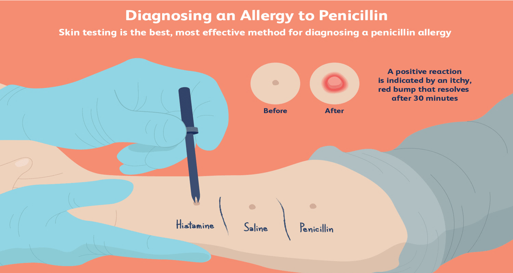

Allergies occur when your immune system reacts to a foreign substance — such as pollen, bee venom or pet dander — or a food that doesn't cause a reaction in most people.
Your immune system produces substances known as antibodies. When you have allergies, your immune system makes antibodies that identify a particular allergen as harmful, even though it isn't. When you come into contact with the allergen, your immune system's reaction can inflame your skin, sinuses, airways or digestive system.
The severity of allergies varies from person to person and can range from minor irritation to anaphylaxis — a potentially life-threatening emergency. While most allergies can't be cured, treatments can help relieve your allergy symptoms.
To evaluate whether you have an allergy, your doctor will likely ask detailed questions about signs and symptoms, perform a physical exam and have you keep a detailed diary of symptoms and possible triggers.
If you have a food allergy, your doctor will likely ask you to keep a detailed diary of the foods you eat and ask if you've stopped eating the suspected food during the allergy evaluation
